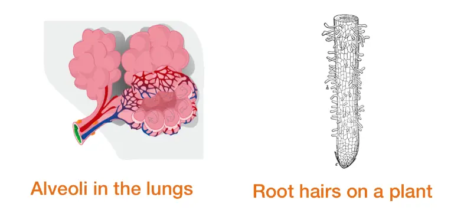
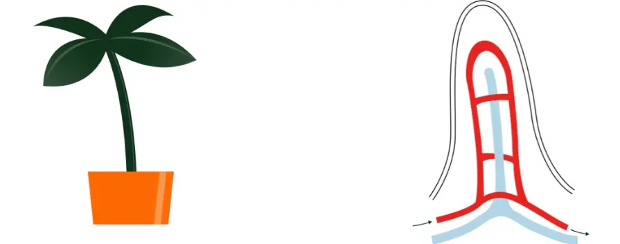
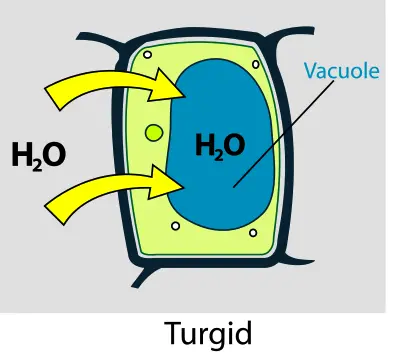
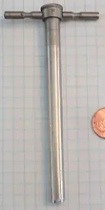
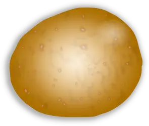
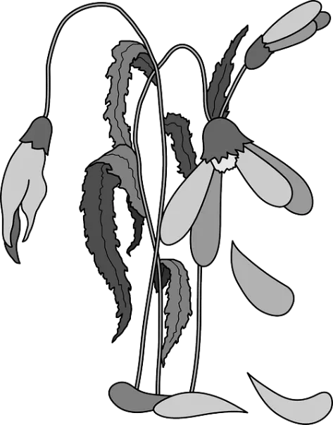

Classroom Projector Deck
1600×900 interactive presentation for the board (spec 2.15–2.17). Click Start presentation below, or press F once presenting for full screen.
1600×900 interactive presentation for the board (spec 2.15–2.17). Click Start presentation below, or press F once presenting for full screen.
What is diffusion?
Which process needs energy from respiration?
Which change would make diffusion faster?
What does osmosis move?
A 2 cm cube has a surface area of 24 cm² and a volume of 8 cm³. What is its surface area to volume ratio?
A plant cell is put in pure water. What happens?
Explain why a potato cylinder placed in a concentrated salt solution loses mass.
Describe the differences between diffusion and active transport.

| Cube | Surface area (cm²) | Volume (cm³) | Surface area : volume |
|---|---|---|---|
| 1 cm | 6 | 1 | 6 : 1 |
| 2 cm | 24 | 8 | 3 : 1 |
| 3 cm | 54 | 27 | 2 : 1 |





| Cylinder | Salt solution (M) | Starting mass (g) | Final mass (g) | Change in mass (g) |
|---|---|---|---|---|
| A | 0.0 | |||
| B | 0.2 | |||
| C | 0.4 | |||
| D | 0.6 | |||
| E | 1.0 |
